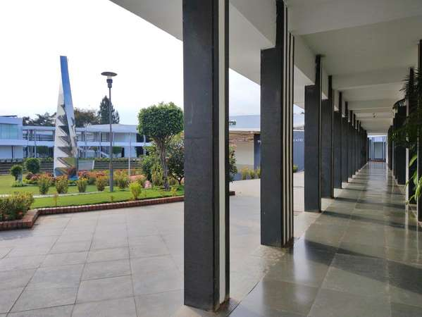

Research & Publications
Research Collaborations
Professor of Supply Chain Management, Pennsylvania State University, Harrisburg, USA
Area: Lean Manufacturing & BIAssistant Professor, Istinye University, Istanbul, Turkey
Area: Green & Lean ManufacturingLecturer & Researcher, University of Galway, Ireland
Area: Quality & Medical DevicesProfessor, Dept. of Mechanical Engineering, Guru Ghasidas Vishwavidyalaya (Central University), Bilaspur, India
Area: Operations & Supply ChainAssistant Professor, Indian Institute of Management (IIM) Mumbai, India
Area: Closed-Loop Supply ChainEvidence Synthesis Specialist, ICMR, New Delhi, India
Area: COVID-19 Burden & Health SystemsSenior Knowledge Expert, McKinsey Knowledge Centre, Mumbai
Area: GSCM & Logistics SystemsClinical Professor, University of Illinois at Chicago, USA
Area: Infectious Disease & ModelingProfessor & Chairperson - Research, Thiagarajar School of Management (TSM), Madurai, India
Area: Supply Chain ResilienceProfessor of Cardiology, Amrita Institute of Medical Sciences, Kochi
Area: Health Economics & ARIMA ModelsProfessor of Clinical Data Science, University College London, UK
Area: Digital Health & Epidemiological ModelsAssociate Professor, Amrita Vishwa Vidyapeetham, Coimbatore
Area: ICT Applications in SCMPublic Health Expert, UNICEF Collaborative Hub, Hyderabad
Area: Epidemic Agent-Based ModelsHealth Economist, IIPH, Bangalore, India
Area: COVID-19 DALY & VSL ModelingDirector, Maitri Research, Kolkata, India
Area: Non-Health GDP CalculatorAssistant Professor, Amrita School of Business, Coimbatore
Area: Closed-Loop SCM HeuristicsAssistant Professor, Amrita School of Engineering, Coimbatore
Area: Lean & Manufacturing SimulationAssistant Professor, Amrita School of Engineering, Coimbatore
Area: Machine Learning in Shop FloorResearcher & Faculty, Amrita Vishwa Vidyapeetham
Area: Assembly Line Heuristics & SimLeanPrincipal Consultant, Huawei Technologies, India (Ex-Amrita School of Engineering)
Area: Blockchain & Job Shop SchedulingSenior Manager - Industrial AI, Accenture, India (Ex-Intel & Amrita)
Area: Wearable Tech & Retail DL ModelsAssistant Professor, Dept. of Mechanical Engineering, Amrita School of Engineering, Coimbatore, India
Area: Friction Stir Processing & MetallurgyEnvironment & Waste Management Expert, Coimbatore
Area: GHG Inventorisation & MitigationProfessor, VSB - Technical University of Ostrava, Czech Republic
Area: Sustainable Machining & EN8 SteelProfessor of Social Work, Amrita Vishwa Vidyapeetham
Area: Social Reintegration & Child WelfareHarrisburg, Pennsylvania, USA
Key Co-author: Dr. Angappa GunasekaranGalway, Ireland
Key Co-authors: Dr. Olivia McDermott, CurranIstanbul, Turkey
Key Co-author: Dr. Erfan Babaee TirkolaeeLondon, United Kingdom
Key Co-author: Dr. Amitava BanerjeeChicago, Illinois, USA
Key Co-author: Dr. Vijay YeldandiOstrava, Czech Republic
Key Co-author: Dr. J. PetruMons, Belgium
Key Co-author: Dr. D. LamyHsinchu, Taiwan
Key Co-author: Dr. T. R. LeeNew Delhi, India
Key Co-authors: Dr. Denny John, PanchalJammu & Kashmir, India
Key Co-author: Dr. K. MathiyazhaganMumbai, Maharashtra, India
Key Co-author: Dr. Vidyadhar V. GedamCoimbatore/Kochi, India
Key Co-authors: Dr. Anbuudayasankar, ThenarasuChennai, Tamil Nadu, India
Primary Affiliation: Dr. Narassima M.S.Gurugram / Mumbai, India
Key Co-author: Dr. K. GaneshBengaluru, India
Key Co-author: Dr. Paramita BhattacharyaHyderabad, India
Key Co-author: Dr. G.R. JammyTeaching & Courses
Course Overview & Topics
Testimonials
Student Feedback Highlights
Courses Handled
| Course Name | Year/ batch | Feedback Score (out of 5) |
|---|
Mentorship
Active Learning Tools
Welcome to the Operations & Policy Analytics Portal. Below are the custom-engineered interactive web platforms, scientific calculators, and simulation dashboards. These state-of-the-art analytical tools were designed to bridge the gap between theoretical optimization models and real-world implementation, offering robust solutions for business workflow planning, public health epidemiological analysis, and macroeconomic policy formulation.
Flexible Job Shop Scheduler & MCDM Simulator
An advanced operations scheduling and Multi-Criteria Decision Making (MCDM) simulation platform. It models flexible job routing, machine sequence allocations, composite priority queues, scheduled downtime calendars, and dynamic shop floor productivity. Features point-and-click arithmetic CDR builders and native professional XML Excel report downloading.
OM PGPM Planning Dashboard
A sophisticated operations simulation and capacity modeling dashboard. It facilitates dynamic workflow mapping, scheduling coordination, bottleneck detection, and queueing-theory allocations for corporate supply chain processes. Designed as an active learning module for strategic operations analysis.
Hospital Scheduler Application
An interactive web-based scheduling application engineered to optimize hospital workforce and shift allocations. It provides intuitive tools to balance healthcare capacity with patient demands through systematic operations management techniques.
ERPSim Learning Dashboard
An interactive ERP simulation and enterprise systems learning platform. It facilitates hands-on active learning of business process integration, real-time data analysis, workflow synchronization, and collaborative operational decision-making in a simulated corporate environment.
COVID-19 DALY Calculator
An interactive, scientifically validated web-based calculator developed to evaluate and quantify public health impacts. It computes Disability-Adjusted Life Years (DALY) based on Years of Life Lost (YLL) and Years Lived with Disability (YLD) to guide evidence-based epidemic policy decisions.
Non-Health GDP Loss Estimator
An advanced macroeconomic econometric simulator. This tool allows researchers and economists to evaluate, simulate, and project sectoral non-health Gross Domestic Product (GDP) losses resulting from workforce morbidity, mortality, and associated macroeconomic pandemic shockwaves.
Experience & Professional Positions
Review & Editorial Boards
Academic Contributions & Invited Talks
Education & Certifications
Educational Qualification
Certifications
Achievements & Key Awards
Gallery


